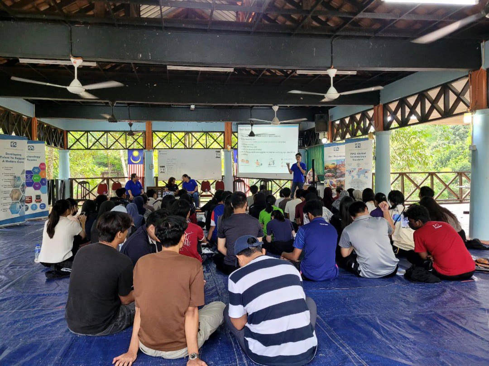

Industry Talk With PPG
From the talk, I can see how the big company have some coonection with universities. It is to give the chances to student to try and work as an intern in the big company such as PG. It also give me motivation or more to encourage me to make more research about other company that recruit intern student. So, I can prepare more earlier to find intern job so that i have experience in a company. From the experience, it is easier for me to get a job once i graduate from UTM.
Industry Visit

In a world that is changing quickly, I believe it is critical for me to be proactive and forward-thinking. It is important in staying one step ahead of other people in this highly competitive setting. The rapid development of technology serves a motivation to always be up to date in an ever-changing environment. It brings impact by being more adaptable to the fast-evolving technology.
UTMDigital Visit
.png)
These whole activities really benefit us all as students. For example, we have been exposed to the place where the UTM Digital staff work, which is called Open Office. At the Open Office, we learn what work the staff need to do and how they relieve their tension in leisure time and more. These activities make us realize that the university is not just a place for us to learn and then take the exam only, but we also need to gain more experience as much as possible, as much experience of how the industry actually works.
Industry Talk 2

My thoughts on this industrial talk,it is imperative for data students to proactively enhance their skills, aligning them with the evolving demands of data engineering. Simultaneously, fostering connections with professionals, particularly those affiliated with companies on our job prospects list, is crucial. This goes beyond mere communication skill development; it extends to gaining invaluable insights into the industry landscape, participation in conferences, and engagement in workshops.
PC Assembly

I got to know how to assemble and disassemble a PC. By doing that, I got to know more about component inside the PC such as CPU, fan, power supply, RAM slot, Hard Disk and more. This activity also taught me to discipline myself because when disassemble the PC, there is no need to rush to avoid the broken of some part inside the PC. I will always cherish this opportunity, which felt like a once-in-a-lifetime chance.
Design Thinking
.png)
My goal is to create new technologies that will make life easier for people. My goal is to be able to solve problems for other people by learning how to create and come up with solutions for problems. Aside from that, I believe I learned a lot about cloud computing and its significance in our day-to-day lives, including work, education, and many other areas. In order to find a solution to the problem, this design thinking method also forces me to think creatively. I believe that my eagerness to learn new things, my communication skills, and my ability to invent and share ideas with others are areas where I may still grow.